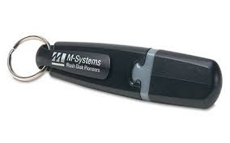
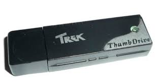

Hoy en día todo el mundo está familiarizado con el pendrive, picho, memoria externa, llave maya y otro sinfín de nombres diferentes que tiene este aparato. Sin embargo, su verdadero nombre es Universal Serial Bus o memoria USB para abreviar. A estas alturas a todos nos parece ya lo más normal del mundo ver un USB, sin embargo, este invento fue revolucionario hace unos años, pero ¿Cómo fue? ¿Cuál es su historia? ¿Cómo funciona realmente? ¿De qué partes consta? ¿Tiene futuro?
He aquí un pequeño vídeo introductorio
Muchas empresas comenzaron en su día la carrera del USB para ser los primeros en inventarlo y patentarlo, sin embargo, podríamos decir que no hubo un claro ganador. Por un lado, la primera patente fue presentada en abril 1999 con el nombre "USB-based PC flash disk", y fue responsabilidad de Amir Ban, Dov Moran y Oron Ogdan, de la empresa Israel MSystems. La patente no describe esta tecnología tal cual la conocemos hoy, ya que la describe con un cable que conecta la memoria y el puerto USB. Por otra parte, en septiembre de 1999 uno de los empleados de IBM, Shimon Shmueli, presentó una divulgación de invención, que no una patente, en la que describía una unidad flash USB. A día de hoy Shmueli sigue asegurando que él inventó la memoria USB. Independientemente de eso, M-Systems se asoció con IBM para llevar al mercado en septiembre del 2000 uno de los dos primeros dispositivos de este tipo del mercado, al que llamaron "DiskOnKey".
Tenía un almacenamiento interno de 8 megabytes. Su precio era de unos 50 dólares, existiendo también un modelo de 32 MB que alcanzaba los 100 dólares. Y digo uno de los dos porque para principios de ese 2000 la empresa de Singapur Trek 2000 International se convirtió en la primera en comercializar una de estas unidades, la cual llevaba el nombre de "ThumbDrive". Como os podéis imaginar, esta empresa también asegura que es la que inventó la memoria USB, aunque la mayoría de fabricantes de estos dispositivos no lo hace licenciando sus patentes.
El ThumbDrive original fue desarrollado en un año, y tenía una impresionante capacidad de 8 megabytes, algo más de cuatro veces los 1,44 megas que ofrecían los disquetes. Todo lo que necesitábamos estaba incluido en una única pieza, por lo que no hacía falta ni cables ni baterías para alimentar su memoria flash, ya que obtenía la energía necesaria del propio conector USB. Su precio era de sólo 28 dólares, lo que aseguraba que cualquiera lo pudiese comprar. Y por si estos no fueran suficientes candidatos para atribuirse un mismo logro, por otra parte tenemos a Pua Khein-Seng, un ingeniero de Malasia, que en 1999 fundó junto a cuatro compañeros fundó la empresa Phison Electronics. En 2000, según Khein-Seng, su empresa tecnológica presentó la unidad de almacenamiento USB con un único chip interno al que llamó "Pen Drive". Las memorias USB desbancaron muy rápidamente a las disqueteras, ya que no sufrían interferencias electromagnéticas, podían almacenar más datos y eras mucho más fáciles de transportar. Arrasaron incluso con los CD, ya que no se rayaban y por tanto su durabilidad era mayor. Al ver que la memoria USB era el futuro las empresas comenzaron a fabricar y mejorar sus propios dispositivos, llegando así a los USB que conocemos hoy en día.
Componentes primarios Las partes típicas de una memoria USB son las siguientes:
Las memorias USB son comunes entre personas que transportan datos de su casa al lugar de trabajo, o viceversa. Teóricamente pueden retener los datos durante unos 20 años y escribirse hasta un millón de veces. Aunque inicialmente fueron concebidas para guardar datos y documentos, es habitual encontrar en las memorias USB programas o archivos de cualquier otro tipo debido a que se comportan como cualquier otro sistema de archivos. Los nuevos dispositivos U3 para Microsoft Windows integran un menú de aplicaciones, semejante al propio menú de "Inicio", que permiten organizar archivos de imágenes, música, etc. Para memorias USB de otros fabricantes también existen colecciones basadas en logicial libre como es el caso de PortableApps.com. La disponibilidad de memorias USB a costos reducidos ha provocado que sean muy utilizadas con objetivos promocionales, especialmente en ámbitos relacionados con la industria de la computación. A menudo se distribuyen de forma gratuita, se venden por debajo del precio de coste o se incluyen como obsequio al adquirir otro producto. Habitualmente, estos dispositivos se personalizan grabando en la superficie de la carcasa de la memoria USB el logotipo de la compañía, como una forma de incrementar la visibilidad de la marca. La memoria USB puede no incluir datos o llevar información precargada. Algunas memorias USB con precarga de datos son de sólo lectura; otras están configuradas con dos particiones, una de sólo lectura y otra en que es posible incluir y borrar datos. Las memorias USB con dos particiones son más caras. Las memorias USB pueden ser configuradas con la función de autoarranque (autorun) para Microsoft Windows, con la que al insertar el dispositivo arranca de forma automática un archivo específico. Para activar la función autorun es necesario guardar un archivo llamado autorun.inf con el programa apropiado en el directorio raíz del dispositivo. La función autorun no funciona en todos los ordenadores. En ocasiones esta funcionalidad se encuentra deshabilitada para dificultar la propagación de virus y troyanos que se aprovechan de este sistema de arranque. Otra utilidad de estas memorias USB es que, si el BIOS del equipo lo admite, pueden arrancar un sistema operativo sin necesidad de CD, DVD ni siquiera disco duro. El arranque desde la memoria USB está muy extendido en ordenadores nuevos y es más rápido que con un lector de DVD-ROM. Se pueden encontrar distribuciones de Linux que están contenidas completamente en una memoria USB y pueden arrancar desde ella. Las memorias USB de gran capacidad, al igual que los discos duros o grabadoras de CD/DVD son un medio fácil para realizar una copia de seguridad, por ejemplo. Hay grabadoras y lectores de CD-ROM, DVD, disquetera o Zip que se conectan al puerto USB. Además, desde 2008, existen equipos de sonido con un puerto USB al cual se puede conectar una memoria USB para reproducir la música contenida en él. Como medida de seguridad, algunas memorias USB tienen posibilidad de impedir la escritura mediante un interruptor. Otros permiten reservar una parte para ocultarla mediante una clave.
En la actualidad las memorias USB están muy vigentes, son un modo seguro y sencillo de transporte de información, sin embargo, ¿Cómo será su futuro? Lo que hoy es lo más común del mundo dentro de tan solo unos años puede convertirse en lo más desfasado que exista, un claro ejemplo de ello son las máquinas de escribir o los radiocasetes. Lo más probable es que ocurra lo mismo con las actuales memorias, de hecho este suceso ya ha comenzado por culpa de la nube. Cada vez se está expandiendo más el uso de servidores en la nube, así que dentro de unos años lo más probable es que no hagan falta los USB, ya que toda la información se almacenará y viajará por la nube.
Las memorias USB son tan comunes que prácticamente todas las empresas de electrónica las fabrican. Su precio está al alcance de todo el mundo y depende del tamaño que desees. El precio común que ronda ahora el mercado es de 10€ por una memoria de 64 GB, siendo más baratas las de 32 GB y más caras las de 128 GB.